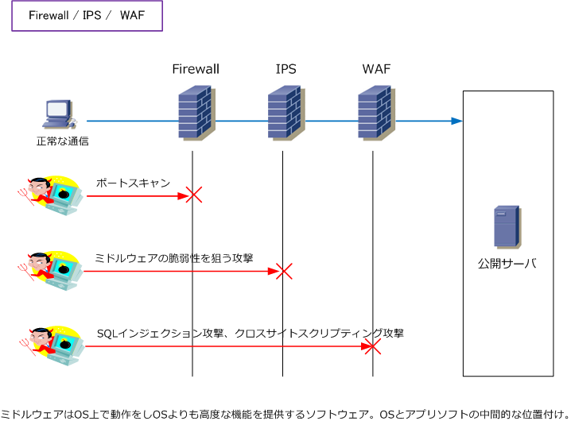
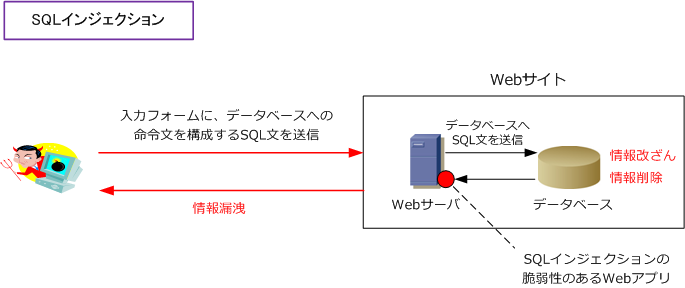
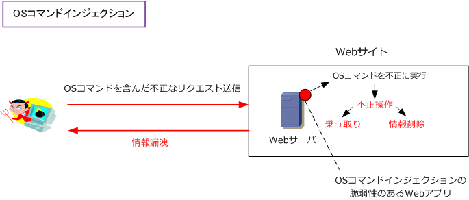
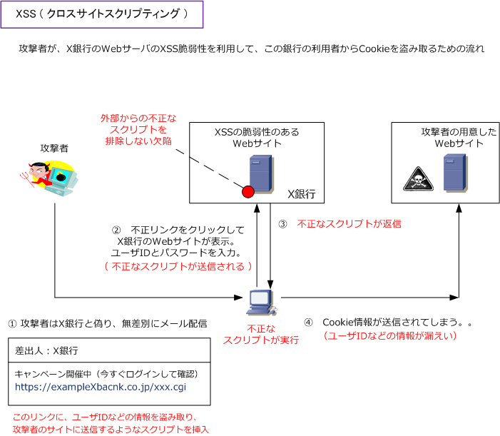

WAF
WAF（ Web Application Firewall ）とは
WAF（Webアプリケーションファイアウォール）とは、従来のファイアウォールやIDS/IPSでは防ぐことが できない不正な攻撃からWebアプリケーションを防御するファイアウォールのこと。Webアプリケーション という観点から、一般的にはWAFといえばWebサーバーが利用するポート 80番、443番のトラフィックを 双方向で監視して、悪意あるユーザーからWebアプリケーションとその背後にあるデータを守る製品のこと。
ファイアウォールがIPとポートを防御、IPSがプラットフォームレイヤーを防御、WAFはアプリケーション レイヤーを防御します。下図からもサービス提供型の公開ネットワークシステムにおいては、Firewall、IPS、 WAFの3セットが必要であることが分かるかと思います。※ どれか1つでも欠けていると致命的と言えます。

Firewall、IPS、WAFの違い
IPS、WAFのどちらの製品も検出パターンに基づいて通信の中身を検査します。IPSは定義された検出パターン に基づいて様々な種類の攻撃（ OSの脆弱性を悪用する攻撃、ファイル共有サービスの攻撃など ）への通信を 検査するのに対して、WAFは定義された検出パターンに基づきWebアプリケーションに特化して検査をします。
| 製品 | 通信のリクエストに対するアクション |
|---|---|
| Firewall | 通信における送信元情報と送信先情報（IP アドレスやポート番号等）を検査して防御を行う。 FWを通過するデータを読み取り、動的にポート解放と閉鎖する機能はステートフルインスペクション。 |
| IPS | 多様なアプリケーション（プロトコル）へのリクエストに対して、シグネチャに基づいて防御を行う。 シグネチャとは、攻撃や不正アクセスの特徴を定義したデータのこと。 |
| WAF | Webアプリケーションへのリクエストに対して、シグネチャやホワイトリストに基づき防御を行う。 ホワイトリストとは、正常な通信を定義した検出パターンのこと。保護対象は、Webアプリケーションのみ。 |
Webアプリケーションに対する脅威
Webアプリケーションへの脅威として以下の攻撃がありますが、WAFはこれらの攻撃を防ぐことができます。
◇ SQLインジェクション 例えば、ショッピングサイトなどのログイン画面や登録画面の入力フォームに不正なSQL文を挿入することで 不正にユーザ情報を入手したりデータベースを改ざんしたりできます。これが「SQLインジェクション」です。

◇ OSコマンドインジェクション 外部からサーバー上の任意のOSコマンドを実行することで、サーバ内のデータ破壊、重要ファイルの流出、 攻撃者によるサーバの乗っ取りを行う攻撃のことをOSコマンドインジェクションと言います。

◇ クロスサイトスクリプティング 悪意のあるスクリプトをXSS（クロスサイトスクリプティング）の脆弱性のあるWebサイトにしかけることで 不正なスクリプトをユーザに実行させる攻撃をクロスサイトスクリプティングと言います。下図のフロー通り 実際の被害はユーザ側で発生することになりますが、標的にされたXSSの脆弱性のあるWebサイトは信頼性を 失いユーザの個人情報が流出する可能性があるので、実質的にユーザ同様に被害を受けます。

攻撃者のWebサイトと、XSS脆弱性のあるWebサイトをまたがって発生するためクロスサイトと呼ばれます。
その他の攻撃手法として以下があります。 ・ フォースフルブラウジング ・ バッファーオーバーフロー ・ Hiddenフィールドの改竄 ・ メタキャラクタインジェクション ・ ユニコード及びURLの符号化（検知回避）
そもそも脆弱性がないシステムであれば、WAFが 導入されていなくても問題ないのですが、脆弱性が 発覚して被害があってからWAFを導入しても手遅れ であることから公共的な公開サーバやEコマース系 の公開サーバのインフラには、WAFの導入は必須。
WAFとIPSとの違い
IPSは、OSやミドルウェアを含むプラットフォームレイヤーが防御対象です。WAFは、プラットフォーム上 で動作する固有のWebアプリケーションが防御対象です。なお、以下の内容は特にWAFならではの機能です。
| WAF特有の主な機能 | 説明 |
|---|---|
| Cookieの改ざん防止機能 | セッションの乗っ取りを防止するため、Cookie値が改ざんされている場合にブロックする。 |
| データの改ざん防止機能 | 金額の改ざん防止のため、パラメーター値が改ざんされている場合にブロックする。 |
| カードのマスキング機能 | サーバからのレスポンスにクレジットカード情報が含まれている場合、マスキング処理する。 |
| SSLアクセラレータ機能 | 暗号化された通信内容をひもといて、通信内容を分析できる。 SSL通信の復号/暗号化処理を行うことでサーバ側の処理を軽減する。 |